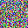

Case Study: PNG#
The PNG format is widely used to encode images.
The PNG spec png.fan can be directly used in Fandango:
$ fandango fuzz -f png.fan -n 1 --population-size=1 -o 32x32.png
produces a nice 32x32 pixel PNG file:
{kind=link}
{kind=link}

The PNG file png.fan is reproduced verbatim below.
Added in version 1.1: png.fan requires Fandango 1.1 or later.
# png_32x32.fan
# Fandango specification for a structurally valid 32x32 PNG file.
import struct
import zlib
import binascii
import random
# ----------------------------------------------------------------------
# Global Constants
# ----------------------------------------------------------------------
IMAGE_WIDTH: int = 32
IMAGE_HEIGHT: int = 32
TEXT_LENGTH: int = 100
# ----------------------------------------------------------------------
# Start Symbol
# ----------------------------------------------------------------------
# Complete PNG file:
# Signature
# IHDR
# Optional tEXt chunks
# One or more IDAT
# IEND
<start> ::= \
<png_signature> \
<ihdr_chunk> \
<text_chunk>* \
<idat_chunk>+ \
<iend_chunk>
# ----------------------------------------------------------------------
# PNG Signature
# ----------------------------------------------------------------------
# Fixed 8-byte PNG signature
<png_signature> ::= b"\x89PNG\r\n\x1a\n"
# ----------------------------------------------------------------------
# IHDR Chunk
# ----------------------------------------------------------------------
# IHDR chunk
<ihdr_chunk> ::= \
<ihdr_length> \
<ihdr_type> \
<ihdr_data> \
<ihdr_crc>
# IHDR data length (13 bytes)
<ihdr_length> ::= <byte>{4}
where <ihdr_length> == int_to_be_bytes(13)
# IHDR chunk type
<ihdr_type> ::= b"IHDR"
# IHDR payload (13 bytes total)
<ihdr_data> ::= \
<ihdr_width> \
<ihdr_height> \
<ihdr_bit_depth> \
<ihdr_color_type> \
<ihdr_compression> \
<ihdr_filter> \
<ihdr_interlace>
# Width (32 pixels)
<ihdr_width> ::= <byte>{4} := int_to_be_bytes(IMAGE_WIDTH)
# Height (32 pixels)
<ihdr_height> ::= <byte>{4} := int_to_be_bytes(IMAGE_HEIGHT)
# Bit depth (8 bits per channel)
<ihdr_bit_depth> ::= b"\x08"
# Color type (2 = truecolor RGB)
<ihdr_color_type> ::= b"\x02"
# Compression method (0)
<ihdr_compression> ::= b"\x00"
# Filter method (0)
<ihdr_filter> ::= b"\x00"
# Interlace method (0 = no interlace)
<ihdr_interlace> ::= b"\x00"
# CRC of IHDR (computed over type + data)
<ihdr_crc> ::= <byte>{4}
where <ihdr_crc> == crc32_bytes( \
bytes(<ihdr_type>) + bytes(<ihdr_data>) \
)
# ----------------------------------------------------------------------
# tEXt Chunk (Optional, Repeatable)
# ----------------------------------------------------------------------
# Single tEXt chunk
<text_chunk> ::= \
<text_length> \
<text_type> \
<text_data> \
<text_crc>
# Length of text payload
<text_length> ::= <byte>{4}
where <text_length> == int_to_be_bytes(len(bytes(<text_data>)))
# tEXt chunk type
<text_type> ::= b"tEXt"
# Fixed-length ASCII text payload
<text_data> ::= <byte>{TEXT_LENGTH} := generate_ascii_text(TEXT_LENGTH)
# CRC of tEXt
<text_crc> ::= <byte>{4}
where <text_crc> == crc32_bytes( \
bytes(<text_type>) + bytes(<text_data>) \
)
# ----------------------------------------------------------------------
# IDAT Chunks
# ----------------------------------------------------------------------
# Single IDAT chunk
<idat_chunk> ::= \
<idat_length> \
<idat_type> \
<idat_data> \
<idat_crc>
# Length of compressed image data
<idat_length> ::= <byte>{4}
where <idat_length> == int_to_be_bytes(len(bytes(<idat_data>)))
# IDAT chunk type
<idat_type> ::= b"IDAT"
# Compressed scanline data for 32x32 RGB image
<idat_data> ::= <byte>* := generate_idat_data(IMAGE_WIDTH, IMAGE_HEIGHT)
# CRC of IDAT
<idat_crc> ::= <byte>{4}
where <idat_crc> == crc32_bytes( \
bytes(<idat_type>) + bytes(<idat_data>) \
)
# ----------------------------------------------------------------------
# IEND Chunk
# ----------------------------------------------------------------------
# Final PNG chunk
<iend_chunk> ::= \
<iend_length> \
<iend_type> \
<iend_crc>
# Length (always 0)
<iend_length> ::= <byte>{4}
where <iend_length> == int_to_be_bytes(0)
# IEND type
<iend_type> ::= b"IEND"
# CRC of IEND (computed over type only)
<iend_crc> ::= <byte>{4}
where <iend_crc> == crc32_bytes(bytes(<iend_type>))
# ----------------------------------------------------------------------
# Helper Functions
# ----------------------------------------------------------------------
def int_to_be_bytes(value: int) -> bytes:
"""
Convert integer to 4-byte big-endian format.
:param value: Integer value.
:return: 4-byte big-endian byte sequence.
"""
return struct.pack(">I", value)
def crc32_bytes(data: bytes) -> bytes:
"""
Compute PNG CRC32 checksum.
:param data: Input bytes.
:return: 4-byte big-endian CRC.
"""
crc: int = binascii.crc32(bytes(data)) & 0xffffffff
return struct.pack(">I", crc)
def generate_ascii_text(length: int) -> bytes:
"""
Generate ASCII text of fixed length.
:param length: Number of characters.
:return: ASCII byte string.
"""
return bytes(
random.randint(32, 126)
for _ in range(length)
)
def generate_idat_data(width: int, height: int) -> bytes:
"""
Generate valid PNG scanlines and compress them.
For each scanline:
- 1 filter byte (0)
- width * 3 RGB bytes
The concatenated raw data is zlib-compressed.
:param width: Image width.
:param height: Image height.
:return: zlib-compressed image data.
"""
raw: bytearray = bytearray()
for _ in range(height):
raw.append(0)
for _ in range(width * 3):
raw.append(random.getrandbits(8))
return zlib.compress(bytes(raw))
Note
Note that png.fan supports only a limited set of PNG fields, so it cannot be used to parse arbitrary PNG files.